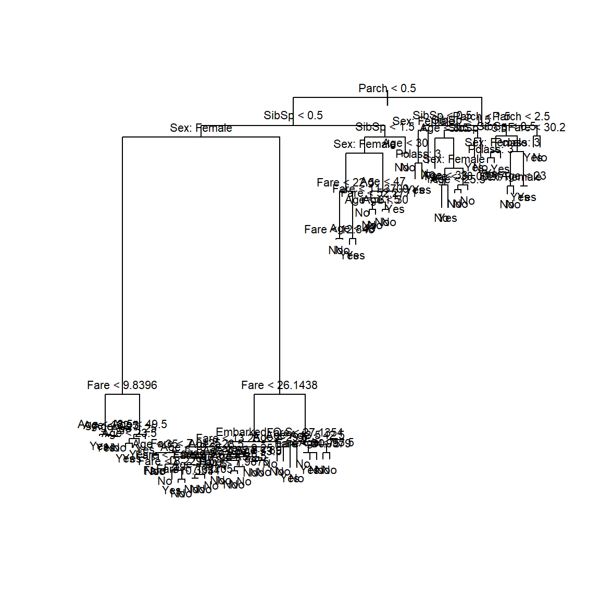
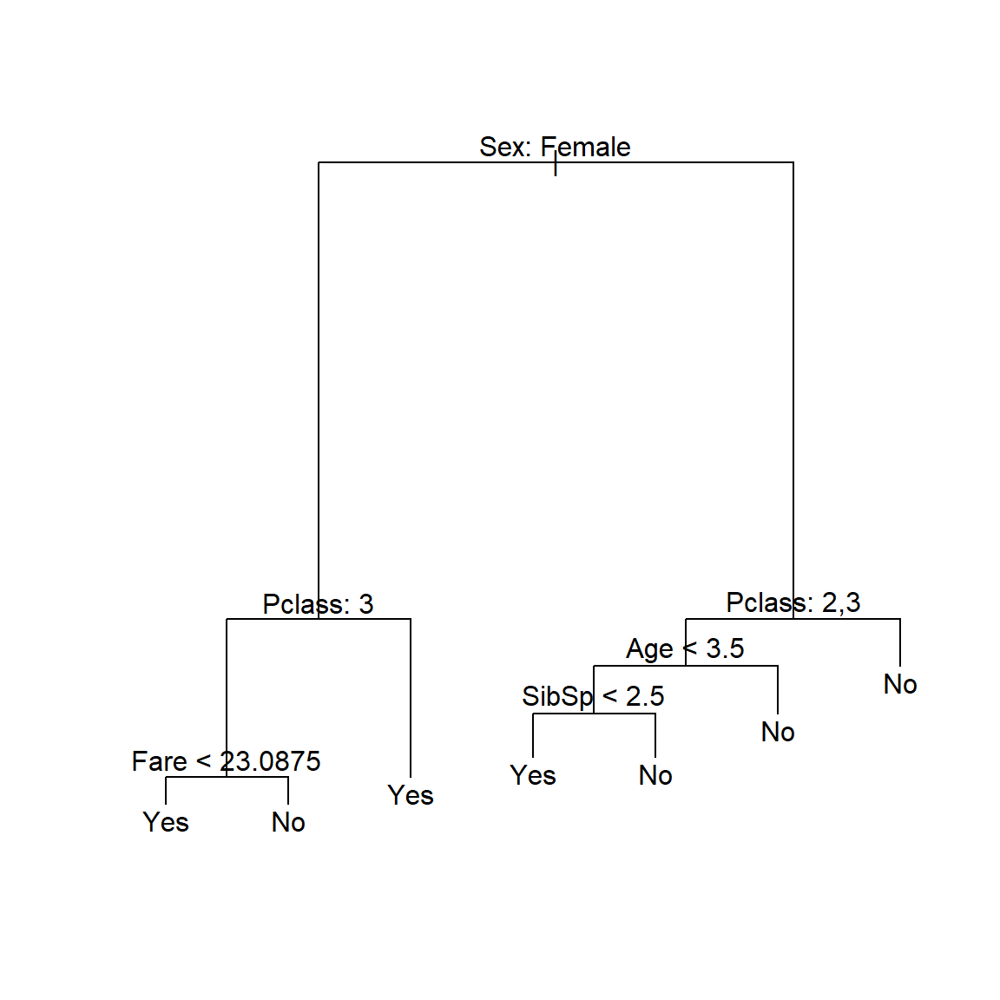
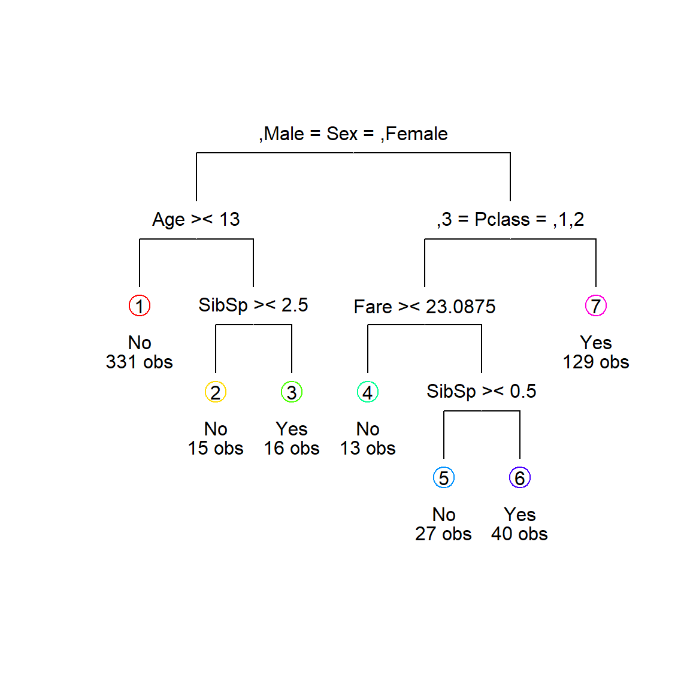
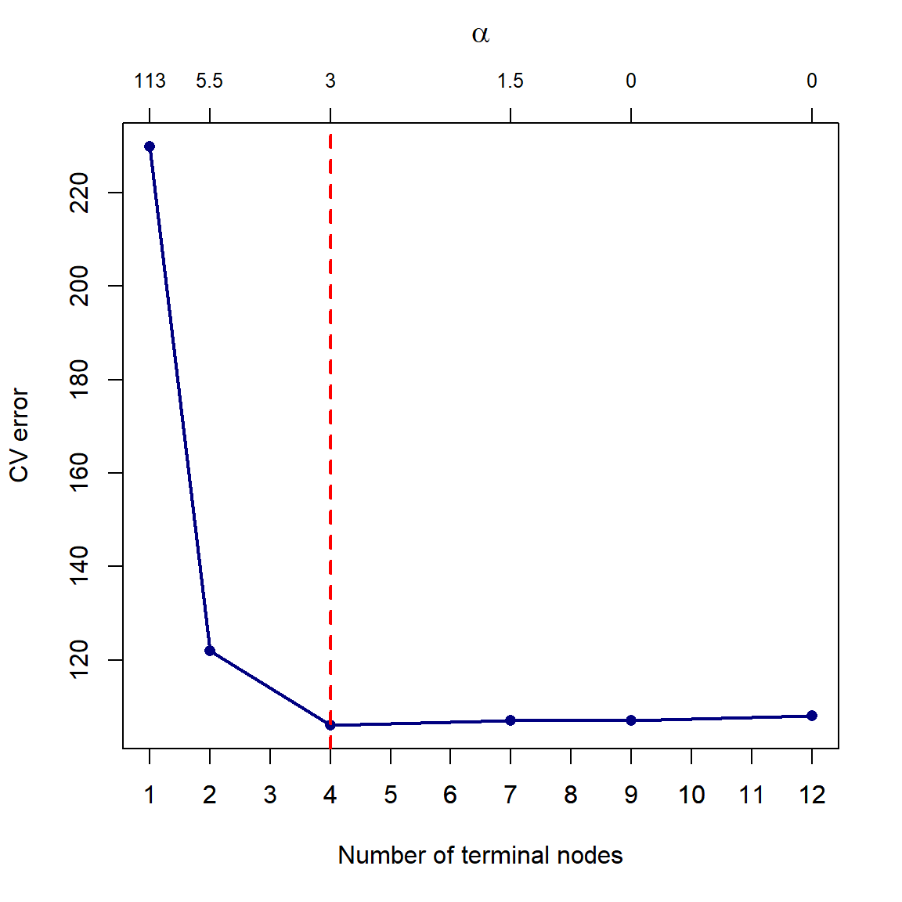
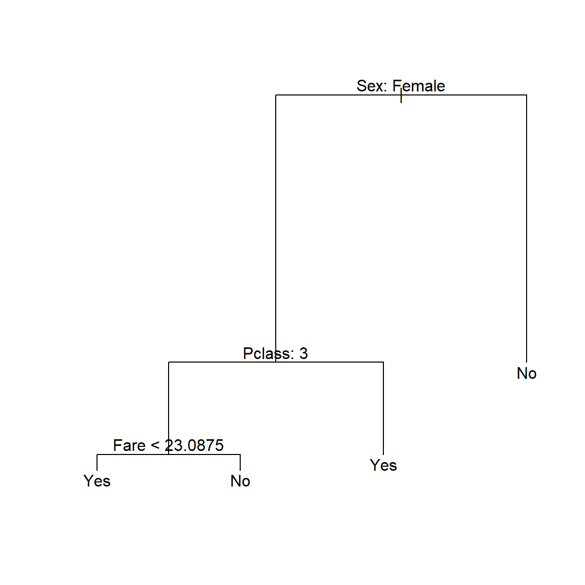
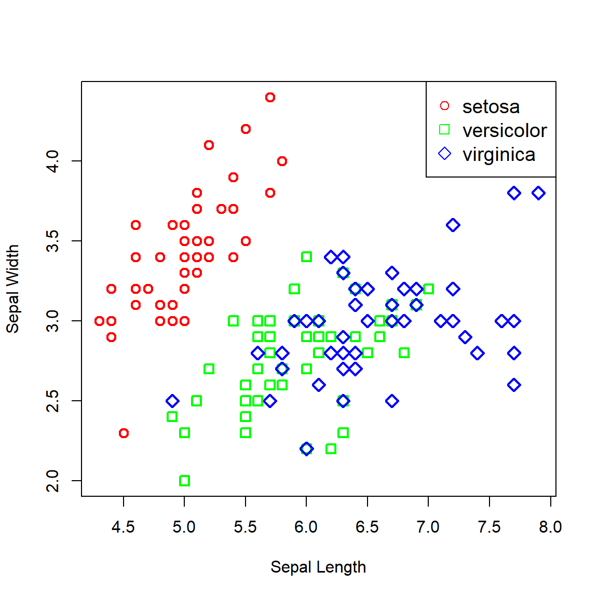
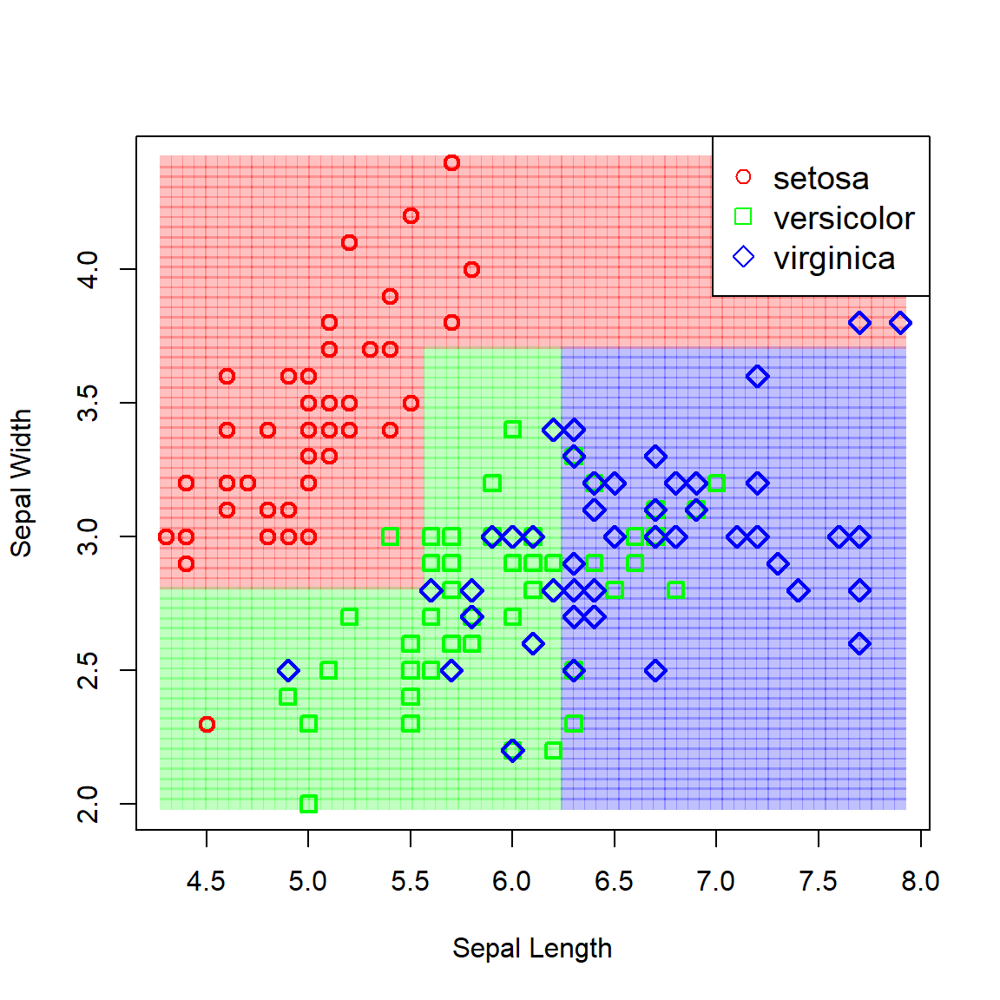

STA5076Z Lecture 10 – Classification Trees
Example – Titanic
The famous Titanic dataset contains information on 891 passengers that were aboard the Titanic on its one and only trans-Atlantic journey. The goal is to predict survival (yes/no) based on the predictors shown in the following table:
Show/Hide Code
library(DT)
titanic <- read.csv('data/titanic.csv', stringsAsFactors = T)
titanic$Pclass <- as.factor(titanic$Pclass) #Class coded as integer, should be factor
datatable(titanic, options = list(scrollX = T, pageLength = 6))
Most of the features are self-explanatory. SibSp refers to the passenger’s number of siblings plus spouses on board; Parch to their number of parents and children; and Embarked to their port of embarkation.1
During the lecture, we fit a classification tree to the entire dataset to illustrate the theory. In this application, we will set aside some data for testing whilst determining model complexity based on the training set. To start with, we will first fit a classification tree using Gini index as splitting criterion.
Show/Hide Code
# Split into train & test, but first remove rows with missing data
titanic_comp <- na.omit(titanic)
set.seed(1)
ind <- sample(nrow(titanic_comp), 0.8*nrow(titanic_comp))
# Here we create actual train and test sets
# Could also just use the training indices, this is just for showing both ways
titanic_train <- titanic_comp[ind,]
titanic_test <- titanic_comp[-ind,]
library(tree)
titanic_tree_gini <- tree(Survived ~ ., data = titanic_train, split = 'gini')
plot(titanic_tree_gini)
text(titanic_tree_gini, pretty = 0, cex = 0.7)
This yields a rather large and messy tree, where the most useful feature (sex) is only used after a few prior splits. Compare this to the tree resulting from using deviance as splitting criterion (the default in the tree package), shown in Figure 2.
Show/Hide Code
titanic_tree <- tree(Survived ~ ., data = titanic_train)
plot(titanic_tree)
text(titanic_tree, pretty = 0)
This presents a similar picture to what one would expect given the emergency protocol of “women and children first”. Note the slight difference in split points compared to using the full dataset as in the lecture slides. We will return to this sampling variability in the next lecture.
We can extract any information for any of the nodes from the fitted object, or add different labels to the terminal nodes (see ?text.tree). There are also other plotting alternatives, for example using draw.tree() from the maptree package. This function can take any tree object; below we use the rpart package to fit a tree. Note the effect that this package’s different default splitting and stopping criteria have on the resulting tree!
Show/Hide Code
library(rpart)
library(maptree)
titanic_rpart <- rpart(Survived ~ ., titanic_train, method = 'class')
draw.tree(titanic_rpart) # Try setting nodeinfo = T
As a brief detour, let us show that the deviance measurement provided by the model’s summary (we will use the tree() object again) indeed matches the definition set out in the lecture slides. We will use the frame object contained in the model object to calculate the total deviance of the tree shown in Figure 2.
Show/Hide Code
f <- titanic_tree$frame #We need the n's and the probs
n_m <- f$n[f$var == '<leaf>'] #This is total n per leaf, not per class!
p_n <- f$yprob[,1][f$var == '<leaf>'] #Pr(no) for all leaf nodes
p_y <- f$yprob[,2][f$var == '<leaf>'] #Pr(yes) for all leaf nodes
nlp <- (n_m*p_n)*log(p_n)+(n_m*p_y)*log(p_y) #\sum_k (n_k log(p_k)) for all leaves
nlp[is.nan(nlp)] <- 0 #Need to deal with log(0)
(D <- -2*sum(nlp)) #Deviance[1] 442.4752Comparing this to the total deviance reported, we see that it indeed matches:
Show/Hide Code
titanic_s <- summary(titanic_tree)
titanic_s$dev[1] 442.4752Note that although the deviance splitting criterion is used in software implementation as was shown here, textbooks tend to not explicitly define this criterion in the relevant sections on classification trees.
Another way of exploring the fitted tree – more as an exploration tool as opposed to one for reporting – is to simply print the object:
Show/Hide Code
titanic_treenode), split, n, deviance, yval, (yprob)
* denotes terminal node
1) root 571 769.900 No ( 0.59720 0.40280 )
2) Sex: Female 209 225.200 Yes ( 0.22967 0.77033 )
4) Pclass: 3 80 110.700 No ( 0.52500 0.47500 )
8) Fare < 23.0875 67 92.150 Yes ( 0.44776 0.55224 ) *
9) Fare > 23.0875 13 7.051 No ( 0.92308 0.07692 ) *
5) Pclass: 1,2 129 48.530 Yes ( 0.04651 0.95349 ) *
3) Sex: Male 362 352.700 No ( 0.80939 0.19061 )
6) Pclass: 2,3 285 231.200 No ( 0.85965 0.14035 )
12) Age < 3.5 14 18.250 Yes ( 0.35714 0.64286 )
24) SibSp < 2.5 9 0.000 Yes ( 0.00000 1.00000 ) *
25) SibSp > 2.5 5 0.000 No ( 1.00000 0.00000 ) *
13) Age > 3.5 271 192.700 No ( 0.88561 0.11439 ) *
7) Pclass: 1 77 102.000 No ( 0.62338 0.37662 ) *Here we can see the path containing male passengers of passenger class 2 or 3, age \(\leq\) 3, and siblings \(\leq\) 2 had a total of 9 passengers…all of whom survived! The best way to gauge whether this is indeed a pattern in the data (as opposed to a seemingly significant pocket of random variation), is to use cross-validation to estimate out-of-sample performance for pruned trees of different sizes.
In the code below we see that one must specify the pruning cost complexity function, which we will set to the misclassification rate.
Show/Hide Code
# First, grow a slightly larger tree
titanic_bigtree <- tree(Survived ~ ., data = titanic_train,
control = tree.control(nobs = length(ind),
mindev = 0.006))
# Then prune it down
set.seed(9)
titanic_cv <- cv.tree(titanic_bigtree, FUN = prune.misclass) #Use classification error rate for pruning
# Make the CV plot
plot(titanic_cv$size, titanic_cv$dev, type = 'o',
pch = 16, col = 'navy', lwd = 2,
xlab = 'Number of terminal nodes', ylab='CV error')
titanic_cv$k[1] <- 0 #Don't want no -Inf
alpha <- round(titanic_cv$k,1)
axis(3, at = titanic_cv$size, lab = alpha, cex.axis = 0.8)
mtext(expression(alpha), 3, line = 2.5, cex = 1.2)
axis(side = 1, at = 1:max(titanic_cv$size))
T <- titanic_cv$size[which.min(titanic_cv$dev)] #The minimum CV Error
abline(v = T, lty = 2, lwd = 2, col = 'red')
For the specific seed set above, we see that a more parsimonious model with 4 leaves yields a lower CV error, which in Figure 3 is given as the number of misclassifications on the y-axis. Note that different seeds will yield different result. Next we prune the tree down to 4 leaves and plot the result.
Show/Hide Code
titanic_pruned <- prune.misclass(titanic_bigtree, best = T-1)
plot(titanic_pruned)
text(titanic_pruned, pretty = 0)
From the resulting tree, all males would be classified as not surviving, together with female passengers in class 3 who’s fare was more than 23.
Even though the focus of decision trees is not on prediction accuracy, we will complete this example by predicting on the test set.
Show/Hide Code
library(caret)
titanic_tree_pred <- predict(titanic_pruned, titanic_test, type = 'class') #Get the classfications directly
c_mat <- table(titanic_tree_pred, titanic_test$Survived)
confusionMatrix(c_mat, positive = 'Yes')Confusion Matrix and Statistics
titanic_tree_pred No Yes
No 72 25
Yes 11 35
Accuracy : 0.7483
95% CI : (0.6689, 0.817)
No Information Rate : 0.5804
P-Value [Acc > NIR] : 2.122e-05
Kappa : 0.4659
Mcnemar's Test P-Value : 0.03026
Sensitivity : 0.5833
Specificity : 0.8675
Pos Pred Value : 0.7609
Neg Pred Value : 0.7423
Prevalence : 0.4196
Detection Rate : 0.2448
Detection Prevalence : 0.3217
Balanced Accuracy : 0.7254
'Positive' Class : Yes
In this example we saw that classification trees handle categorical predictors with ease, without the need to code dummy variables. Another benefit of this approach is that we can just as easily model target variables with multiple classes, as illustrated in the following example.
Example – Iris
Another famous dataset, Iris contains data on 50 flowers from each of 3 species of iris. The measurements are on 4 features: sepal width, sepal length, petal width, and petal length. For the sake of illustrating the decision boundaries in two dimensions, we will only consider the sepal width and length. First, let’s plot the data:
Show/Hide Code
# Load data
data('iris')
# Create index of species
ind <- as.numeric(iris$Species)
# Plot
plot(Sepal.Width ~ Sepal.Length, iris, xlab = 'Sepal Length', ylab = 'Sepal Width',
col = c('red', 'green', 'blue')[ind],
pch = c(1, 0, 5)[ind], lwd = 2, cex = 1.2)
legend(x = 'topright', legend = levels(iris$Species),
pch = c(1, 0, 5), col = c('red', 'green', 'blue'), cex = 1.2)
Now let’s fit a vanilla classification tree to the data and view the resulting partitioned feature space.
Show/Hide Code
# Vanilla tree
iris_tree <- tree(Species ~ Sepal.Width + Sepal.Length, iris)
# Grid for predicting
x <- seq(min(iris$Sepal.Length), max(iris$Sepal.Length), length.out = 65)
y <- seq(min(iris$Sepal.Width), max(iris$Sepal.Width), length.out = 65)
fgrid <- expand.grid(Sepal.Length = x, Sepal.Width = y)
# Predict over entire space
iris_pred <- predict(iris_tree, fgrid, type = 'class')
ind_pred <- as.numeric(iris_pred)
# Custom colours
r <- rgb(255, 0, 0, maxColorValue = 255, alpha = 255*0.25)
g <- rgb(0, 255, 0, maxColorValue = 255, alpha = 255*0.25)
b <- rgb(0, 0, 255, maxColorValue = 255, alpha = 255*0.25)
# Plot the predicted classes
plot(fgrid$Sepal.Width ~ fgrid$Sepal.Length,
col = c(r, g, b)[ind_pred],
pch = 15, xlab = 'Sepal Length', ylab = 'Sepal Width')
# And add the data
points(Sepal.Width ~ Sepal.Length, iris,
col = c('red', 'green', 'blue')[ind],
pch = c(1, 0, 5)[ind], lwd = 2, cex = 1.2)
legend(x = 'topright', legend = levels(iris$Species),
pch = c(1, 0, 5), col = c('red', 'green', 'blue'), cex = 1.2)
Footnotes
The Titanic initially departed from Southampton (S), then picked up passengers at Cherbourg, France (C), before making a final stop at Queenstown, Ireland (Q), today known as Cobh.↩︎